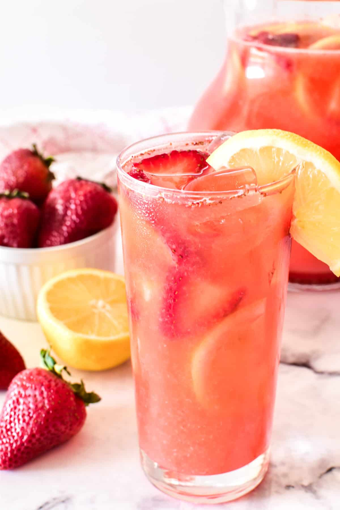

Strawberry Lemonade

Strawberry Lemonade is the ultimate summer drink! It's sweet, refreshing, and easy to make with just 4 simple ingredients. If you love lemonade, this recipe is guaranteed to be a new summer favorite!
Ingredients
- 2 cups of strawberries
- 2 cups of lemon juice (about 10 lemons)
- 2 cups of sugar
- 7 cups of water
Steps
- Wash strawberries, remove stems, and cut into quarters.
- Combine quartered strawberries with 1 c. water in a blender; puree until smooth. Push mixture through a fine mesh strainer to remove extra seeds and pulp. Set puree aside.
- Cut lemons in half and juice them to get 2 cups lemon juice. Set juice aside.
- Prepare simple syrup by combining 2 c. sugar, 2 c. water, and 6-8 juiced lemon halves in a medium saucepan. Bring to a boil; remove from heat and cover until cool.
- Once cool, combine strawberry puree, lemon juice, simple syrup, and 4 c. water in a large pitcher.
- Garnish with lemon slices and strawberries as desired. Serve over ice.
Home Page